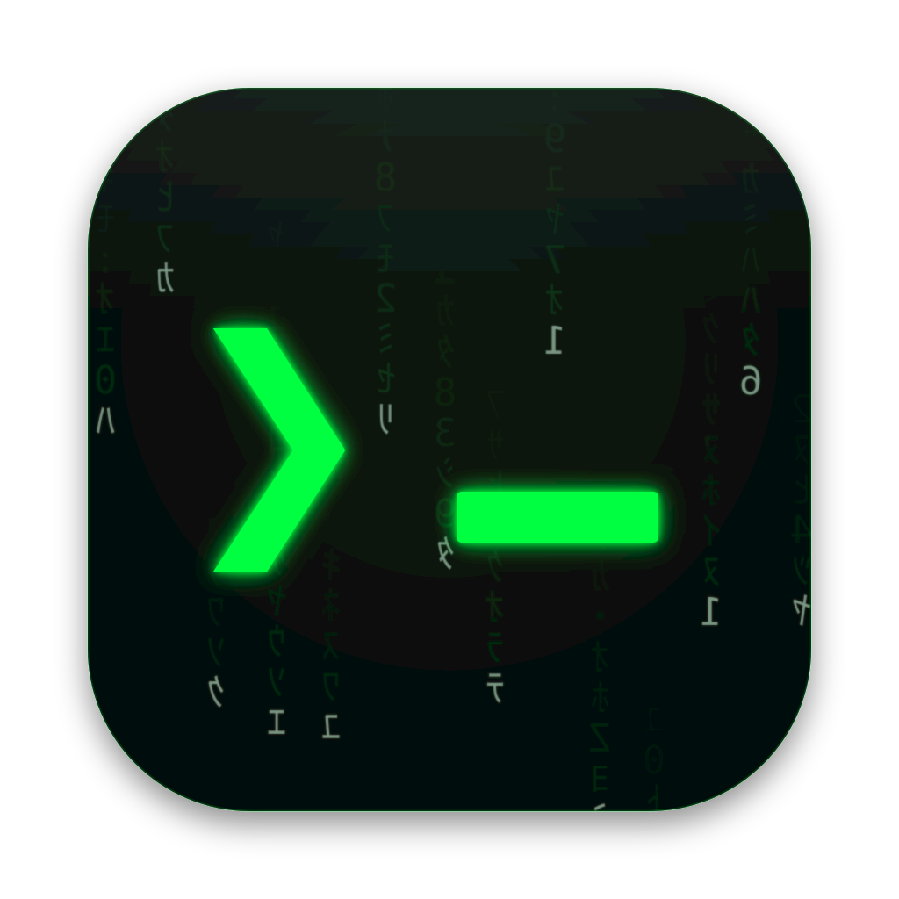
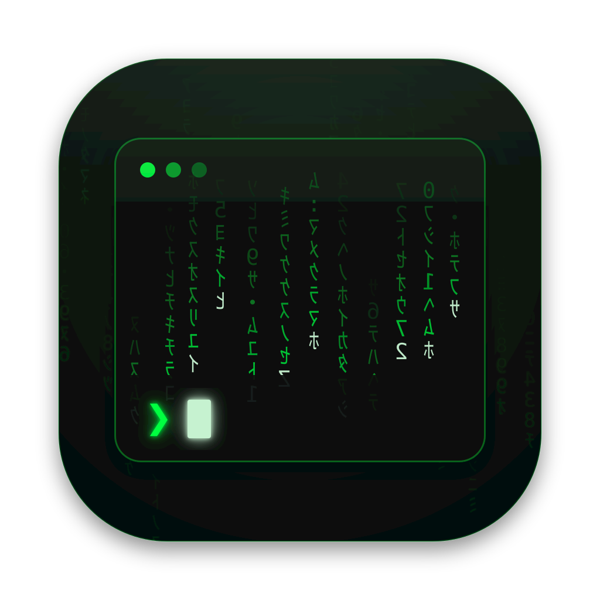

Cada opción a 1024 px y en los tamaños reales del Dock y de Finder (128 / 64 / 32 / 16), sobre fondo oscuro y claro.
El ❯_ del prompt en verde fósforo sobre lluvia digital tenue. Es la más directa y se lee hasta a 16 px.

Monograma «M» esculpido en lluvia de katakana espejada, con el contorno iluminado. La más «Matrix» y con más marca.
Una ventana de terminal de Mac con semáforos verdes, lluvia dentro y el cursor esperando. La más «app nativa».
